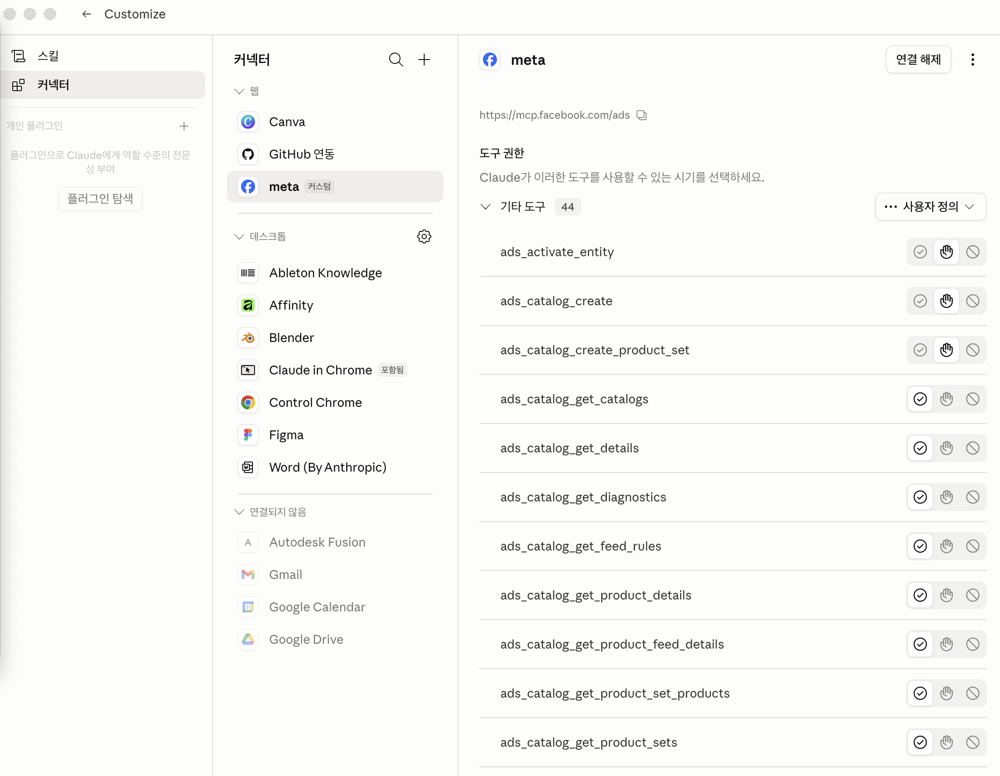

용어 사전
본 가이드에 자주 등장하는 약어와 용어를 먼저 정리합니다. 모르는 게 나오면 여기로 돌아오세요.
- MCP
- Model Context Protocol. AI에 붙이는 외부 도구 모음 표준
- OAuth
- 비밀번호 없이 로그인으로만 권한 위임하는 인증 방식
- ROAS
- 광고비 대비 매출 비율. 100원 써서 200원 벌면 2.0
- CM1 / CM2
- 공헌이익 1차/2차. CM1 = 매출 − 변동비, CM2 = CM1 − 광고비
- PII
- 개인식별정보 (이름·전화·이메일 등)
- CAPI
- Conversions API. 메타 서버 사이드 이벤트 전송
- Pixel
- 웹사이트에 심는 메타 추적 코드
- BM
- Business Manager. 광고계정·페이지·픽셀을 묶는 컨테이너
- 위계
- 캠페인 → 광고세트 → 광고. 목표 → 예산·타게팅 → 실제 자산
- CLI
- Command Line Interface. 마우스 클릭 대신 키보드로 명령어를 입력해 컴퓨터를 조작하는 방식. 터미널이 대표적
- GUI
- Graphical User Interface. 마우스로 버튼·아이콘 클릭하는 일반적인 그래픽 화면 방식
- 터미널 (Terminal)
- 검은 창에 텍스트로 명령을 입력하는 도구. macOS = "터미널" 앱, Windows = "PowerShell" 또는 "Windows Terminal"
- PowerShell
- Windows의 기본 명령줄 도구. macOS의 터미널에 해당
- Node.js
- 자바스크립트 실행 환경. Claude Code가 이걸 기반으로 돌아감
- npm
- Node Package Manager. Node.js 도구들을 설치·관리하는 도구. Node.js 설치하면 같이 깔림
- -g 옵션
- "global" 약자. npm 명령에 쓰면 "이 컴퓨터 전역에 설치" 의미. 어느 폴더에서든 호출 가능해짐
- LTS
- Long Term Support. 장기 지원 안정 버전. 일반 사용자는 항상 LTS 선택 권장
- Homebrew (brew)
- macOS용 패키지 매니저. 앱 스토어 대신 명령어로 개발 도구를 깔게 해줌
- winget
- Windows 11 기본 패키지 매니저. macOS의 Homebrew에 해당
- WSL
- Windows Subsystem for Linux. Windows 안에서 리눅스(우분투)를 돌리는 기능. 개발자가 주로 사용
- ~/ (틸드 슬래시)
- 현재 사용자의 홈 폴더 단축 표기. macOS·Linux에서
/Users/이름/, Windows에서C:\Users\이름\
- Markdown (.md)
- 일반 텍스트로 서식을 표현하는 문법. 슬래시 명령 파일이 이 형식
- settings.json
- Claude Code 설정 파일. 권한·환경변수·훅 등을 저장. JSON 형식
- JSON
- JavaScript Object Notation. 설정·데이터를 저장하는 텍스트 형식.
{ "키": "값" }구조
- HTTP transport
- MCP 서버와 통신하는 방식. URL로 접속. Claude Code의
--transport http옵션
- --scope user
- "사용자 전체에 등록" 옵션. 폴더 안 가리고 모든 곳에서 쓸 수 있게 됨
- subagent_type
- Claude 내부에서 호출할 전문 에이전트 유형. 예:
softhing-cro,my-cfo등 직무 에이전트 ID
메타 광고 위계 구조
메타 광고는 3단 구조입니다. 이 위계를 모르면 캠페인 출고 5게이트가 막연해집니다.
Claude Code 설치
Anthropic이 만든 터미널 CLI 도구입니다. 슬래시 명령은 모두 이 위에서 실행됩니다. 이미 설치돼있으면 스킵하세요.
0-1. 터미널 열기
🍎 macOS
Spotlight(⌘ + Space) → "터미널" 입력 → Enter
검은 창이 뜨면 정상. iTerm2·Warp 같은 대체 터미널도 OK.
🪟 Windows
시작 메뉴 → "Windows Terminal" 또는 "PowerShell" 검색 → Enter
Win11 기본 탑재. Win10이면 Microsoft Store에서 "Windows Terminal" 무료 설치 권장. Win + X → "터미널"도 가능.
0-2. Node.js 확인
두 OS 공통. 터미널에 입력:
node -vv20.x 이상이면 OK → 0-3 스킵. command not found 또는 'node'은(는) 내부 또는 외부 명령... 아닙니다가 뜨면 0-3으로.
0-3. Node.js 설치 (필요 시)
🪟 Windows
방법 A · 공식 인스톨러
nodejs.org에서 LTS .msi 다운로드 → "Add to PATH" 체크 → 설치
방법 B · winget
winget install OpenJS.NodeJS.LTSnode -v로 재확인.
0-4. Claude Code 설치
두 OS 공통:
npm install -g @anthropic-ai/claude-code설치 후 claude --version으로 확인.
npm config set prefix "$env:APPDATA\npm" 후 재설치.
0-5. 첫 로그인
claude처음 실행하면 Anthropic 계정 로그인 안내. 기본 브라우저가 자동으로 열리고 인증 끝나면 터미널로 돌아옵니다.
node -v → npm install -g 흐름. 단 Windows native PowerShell과 WSL은 별도 환경이므로, 한쪽에 설치한 Claude Code가 다른 쪽에서 보이지 않습니다. 메인으로 쓸 쪽을 정해서 설치하세요.
메타 비즈니스 자산 정리
MCP 연결 전에 광고계정·페이지·픽셀이 비즈니스 매니저에 묶여있는지 먼저 확인합니다.
- 비즈니스 매니저(BM) 계정에 광고계정 1개 이상 연결돼있다
- 광고계정에 결제수단(카드)이 등록돼있다
- 광고하려는 페이지(인스타그램 비즈니스 계정 포함)가 같은 BM에 묶여있다
- (D2C 광고 시) Pixel 또는 CAPI 데이터셋이 설치돼있다
- (카탈로그 광고 시) 상품 카탈로그가 만들어져있다
Meta Ads MCP 등록
사용 환경에 따라 두 경로 중 선택합니다. Claude Code에서 /smeta를 쓸 거면 경로 B가 필수입니다.
경로 A · Claude Desktop
설정 → Connectors → Custom → URL 입력
https://mcp.facebook.com/adsFacebook 로그인 → 권한 동의 → 자동 연결
경로 B · Claude Code (터미널)
유저 스코프로 1회 등록. 모든 폴더에서 사용 가능.
claude mcp add \
--transport http \
--scope user \
meta-ads \
https://mcp.facebook.com/ads등록 후 claude 재시작 시 OAuth 자동 트리거
연결 확인
claude mcp listmeta-ads: ... ✓ Connected이 표시되면 정상입니다.
44개 권한 분류 — 어디서 어떻게 클릭하는가
Meta Ads MCP는 44개 툴을 노출합니다. 터미널이 아니라 Claude PC 앱(GUI)에서 각 툴을 "항상 허용 / 승인 필요"로 클릭 분류하는 작업입니다.
1. 어디서 설정하는가
🖥️ Claude Desktop 앱 (권장)
가장 직관적. 클릭 한 번씩으로 44개 분류.
- Claude Desktop 실행
- 좌측 하단 프로필 아이콘 → 설정(Settings)
- 좌측 메뉴 Connectors 클릭
- 목록에서 meta-ads 클릭
- 스크롤 → "기타 도구 (44)" 섹션
- 각 줄 우측 토글로 항상 허용 / 승인 필요 선택
⌨️ Claude Code (터미널) 대안
Desktop 없이 Code만 쓰는 경우. 세 가지 방법.
방법 A · 인터랙티브 프롬프트
툴 첫 호출 시 "Allow once / Allow always / Deny" 프롬프트 자동 노출. 그 자리에서 선택.
방법 B · /permissions 명령
/permissions세션 안에서 권한 일괄 관리 패널 진입.
방법 C · settings.json 직접 편집
~/.claude/settings.json의 permissions.allow / permissions.deny 배열에 툴 이름 추가.

2. 분류 기준 — 2등급
Read-only
항상 허용 · 34개
이름에 get 또는 insights가 들어가면 전부 해당. 광고비 0원, 데이터 조회만.
Write / PII
승인 필요 · 10개
이름에 create·update·activate가 들어가면 전부 해당. 광고비 직접 차감 또는 PII 업로드.
get · insights → ✅ 항상 허용 (34개) | create · update · activate → ⛔ 승인 필요 (10개). 메타가 새 툴을 추가해도 이 패턴이면 즉시 분류 가능.
3. 승인 필요 10개 (절대 자동 허용 금지)
| 툴 이름 | 위험 |
|---|---|
ads_activate_entity | 일시정지 → 활성. 광고비 즉시 흐름 |
ads_catalog_create | 신규 카탈로그 |
ads_catalog_create_product_set | 상품 세트 |
ads_create_ad | 광고 출고 = 즉시 노출 |
ads_create_ad_set | 일예산·타게팅 |
ads_create_campaign | 예산 컨테이너 |
ads_create_creative | 크리에이티브 자산 |
ads_create_custom_audience | 오디언스 컨테이너 |
ads_update_custom_audience_users | PII 업로드 · 법무 검토 필수 |
ads_update_entity | 예산·타게팅 수정 · ROAS 박살 위험 |
Claude에게 시켜서 만들기 (코드 0줄)
슬래시 명령을 직접 markdown으로 쓸 필요 없습니다. 아래 프롬프트의 빈칸만 본인 회사 정보로 채워서 터미널에 붙여넣으면 Claude가 알아서 생성합니다.
🚀 빠른 방법 — 프롬프트 복사 → 빈칸 채우기 → 터미널에 붙여넣기
아래 박스 우상단 Copy 버튼 클릭 → [ ... ] 안에 본인 회사 정보 채우기 → Claude Code 터미널에 붙여넣고 Enter. Claude가 슬래시 명령 파일을 자동 생성합니다.
아래 정보를 바탕으로 메타 광고 운영용 슬래시 명령을 만들어줘.
~/.claude/commands/[원하는명령어이름].md 파일로 저장하면 돼.
## 내 회사 기본 정보
- 회사/브랜드 이름: [예: 무인양품 코리아]
- 업종: [예: 라이프스타일 D2C / SaaS / 교육 / 식품 / 패션]
- 광고할 제품/서비스: [예: 프리미엄 반려동물 침구 / B2B 분석 SaaS / 비건 화장품]
- 평균 객단가(원): [예: 80,000]
- 월 광고 예산(원): [예: 1,000,000]
- 주요 타겟층: [예: 30~45 여성, 반려견 보호자, 수도권]
## 브랜드 톤 규칙 (광고 카피에 반영)
- 말투: [예: 존댓말, 친근하지만 전문성 강조]
- 자주 쓰는 키워드: [예: 보호자, 함께, 편안함]
- 피해야 할 표현: [예: 효능 단정, 100% 보장, 최고/유일 같은 과장어]
## 예산·마진 안전판
- 첫 캠페인 일예산 캡(원): [예: 20,000]
- 최소 마진 기준: [예: CM2(공헌이익2차) 30% 이상]
- 광고계정 월 한도(원): [예: 1,500,000]
## 슬래시 명령 이름
- 명령어 이름: [예: myads — /myads로 호출되게 됨]
## 만들어야 할 5개 모드
1. 진단 모드 — Read-only 6단계 헬스체크
(ads_get_ad_accounts → ads_get_ad_account_pages → ads_get_datasets →
ads_get_dataset_quality → ads_insights_advertiser_context → ads_get_opportunity_score)
2. 캠페인 모드 — 출고 5게이트 (구조→오퍼→마진→톤→출고)
3. 리포트 모드 — 인사이트 분석 + HTML 시각판 저장
4. 응급 모드 — ROAS 박살 캠페인 정지·원인 분석
5. 오디언스 모드 — PII 업로드 게이트, 법무 검토 필수
## 공통 안전판 (변경 불가)
- Write 권한 10개는 호출 전 매번 사용자 명시 승인:
ads_activate_entity, ads_catalog_create, ads_catalog_create_product_set,
ads_create_ad, ads_create_ad_set, ads_create_campaign, ads_create_creative,
ads_create_custom_audience, ads_update_custom_audience_users, ads_update_entity
- 첫 캠페인 일예산 캡 적용
- PII 업로드는 법무 검토 통과 전 차단
- 다른 사업부·다른 광고 채널은 본 슬래시 범위 외
파일 작성 끝나면:
1. 어떤 경로에 저장했는지 알려줘
2. Claude Code를 재시작해야 새 명령이 인식된다고 안내해줘
3. 첫 사용 예시 1개 보여줘 ("/[명령어이름] 진단" 결과 흐름)[ ... ] 안의 예시는 참고용. 본인 회사 실제 정보로 모두 교체 후 붙여넣으세요. 빈칸이 남아있으면 Claude가 물어볼 수도 있고, 일반 값으로 채워버릴 수도 있어서 작업이 길어집니다.
🔧 직접 만들고 싶다면 (수동)
코드를 직접 다루는 게 편한 경우. Claude Code의 슬래시 명령은 단순히 markdown 파일입니다. 위치:
~/.claude/commands/<명령어이름>.md파일명이 myads.md면 /myads로 호출됩니다.
템플릿 (복사 → 본인 환경에 맞춰 수정)
아래를 ~/.claude/commands/myads.md로 저장하면 즉시 /myads 사용 가능. <...>로 표시된 부분만 본인 회사용으로 채우세요.
# 메타 광고 운영 — <회사명>
메타 광고 운영을 라우팅한다. Meta Ads MCP 44개 툴을 조합해,
**Write 전에 Read 3번** 원칙을 적용한다.
## 입력
서브명령 + 인자: $ARGUMENTS
## 서브명령 라우팅
입력이 비어있으면 진단 모드로 기본 실행.
| 서브명령 | 모드 | 액션 |
|---|---|---|
| (없음) 또는 `진단` | 헬스체크 | Read-only 6단계 |
| `캠페인 <설명>` | 출고 SOP | 구조→설계→검증→출고 |
| `리포트 <기간>` | 성과 분석 | 인사이트 + HTML |
| `응급 <캠페인>` | 위기 대응 | 정지·원인 분석 |
| `오디언스 <설명>` | PII 게이트 | 법무 검토 |
## 공통 안전판
1. ⛔ Write 툴 10개는 호출 전 매번 사용자 명시 승인
(activate_entity / catalog_create / catalog_create_product_set /
create_ad / create_ad_set / create_campaign / create_creative /
create_custom_audience / update_custom_audience_users / update_entity)
2. 첫 캠페인 일예산 ₩10K~₩20K 캡
3. PII 업로드(update_custom_audience_users)는 법무 검토 통과 전 차단
4. <여기에 회사 브랜드 톤 규칙 작성>
5. <여기에 회사 마진 정책 작성>
## 모드 1: 진단
다음 순서대로 호출:
1. ads_get_ad_accounts
2. ads_get_ad_account_pages
3. ads_get_datasets
4. ads_get_dataset_quality
5. ads_insights_advertiser_context
6. ads_get_opportunity_score
각 결과에 빨간불·노란불·녹색불 라벨링.
## 모드 2: 캠페인 출고 SOP
Gate 1: 구조 검증 (Read)
Gate 2: 오퍼·카피 설계 (Claude가 직접 제안)
Gate 3: 마진·예산 검증 (Claude가 직접 산출)
Gate 4: 톤·미감 검수 (회사 톤 규칙 기준)
Gate 5: 출고 (사용자 명시 승인)
## 모드 3: 리포트
ads_insights_performance_trend
→ ads_insights_anomaly_signal
→ ads_insights_industry_benchmark
→ ads_get_opportunity_score
결과를 HTML 시각판으로 저장 후 open.
## 모드 4: 응급
ads_get_ad_entities + ads_insights_performance_trend로 문제 캠페인 확인
→ 사용자 승인 후 ads_update_entity로 PAUSED 처리
## 모드 5: 오디언스 (PII 게이트)
1. 업로드 데이터 출처·해시 처리 확인
2. 법무 검토 (회사 개인정보처리방침 정합성)
3. 통과 후에만 ads_create_custom_audience + ads_update_custom_audience_users 호출
## 금지 사항
- 자동 Write 호출 금지
- <여기에 회사별 금지 행동 작성>커스터마이즈 포인트 5종
| 커스터마이즈 영역 | 예시 |
|---|---|
| 브랜드 톤 규칙 | "존댓말 사용 / 과장 금지 / 가격 강조 우선" 등 자체 규칙 |
| 마진 정책 | "CM2 30% 미만 캠페인 자동 정지 권유" 등 |
| 금지 표현 | "의료 효능 단정 / 100% 보장 / 전후 비교 사진" 등 |
| 일예산 캡 | 회사 규모에 따라 ₩10K → ₩50K → ₩200K 등 조정 |
| 법무 게이트 | PII 업로드 시 호출할 자체 법무 에이전트 또는 매뉴얼 체크리스트 |
(선택) 직무 에이전트 추가
슬래시 명령 안에서 다른 에이전트를 호출하면 전문성 ↑. 예시:
~/.claude/agents/my-cfo.md # 재무 직무 에이전트
~/.claude/agents/my-cro.md # 매출 직무 에이전트
~/.claude/agents/my-legal.md # 법무 에이전트생성한 후 슬래시 명령에서 Agent 툴로 호출:
Gate 3에서 Agent (subagent_type: 'my-cfo')를 병렬 호출,
입력: "일예산 ₩X · 목표 ROAS Y에서 CM1/CM2 영향 산출"에이전트 작성법은 Anthropic 공식 문서 참조.
검증 — 슬래시 명령 등록 확인
슬래시 명령 저장 후 Claude Code 재시작 → /myads 입력했을 때 자동완성이 뜨면 정상 등록.
/smeta를 그대로 표기합니다. 본인이 만든 슬래시 명령(예: /myads)으로 바꿔서 읽으시면 됩니다.
슬래시 명령의 5개 모드 (예: /smeta)
Step 04에서 만든 슬래시 명령은 1개 + 서브명령 5개로 구성됩니다. 입력 첫 단어로 모드가 결정됩니다. 아래 예시는 /smeta 기준 — 본인 명령으로 치환해서 보세요.
/smeta [서브명령] [인자]
캠페인 출고 5게이트
신규 캠페인은 5단계 게이트를 순차 통과해야 합니다. 각 게이트 실패 시 사용자 승인 없이 다음 진행 금지.
- Gate 5(Write)는 항상 사용자 명시 승인 필요
- 첫 캠페인 일예산 ₩10K~₩20K 캡
- PII 업로드(
ads_update_custom_audience_users)는 법무 검토 통과 전 차단
진단부터 시작
바로 캠페인 출고하지 말고 Read-only 진단부터 돌립니다. 광고계정 헬스 확인 후 출고 진행 여부를 결정합니다. 이 페이지의 /smeta는 Step 04에서 만든 본인 슬래시 명령으로 바꿔 읽으세요.
1. 진단 실행
/smeta6단계 헬스체크 자동 진행. 각 단계 결과는 빨간불 / 노란불 / 녹색불로 라벨링됩니다.
2. 결과별 분기
| 상태 | 다음 액션 |
|---|---|
| 픽셀 미설치 | 광고 출고 보류. 픽셀 설치 SOP 우선 |
| 데이터 품질 낮음 | 운영 직무 에이전트 호출, 데이터 정제 우선 |
| 기회 점수 양호 | /smeta 캠페인 <설명> 진행 |
3. 첫 캠페인 입력 예시
/smeta 캠페인 D2C 첫 캠페인
일예산 ₩20,000, 7일
타겟: 30~45 여성
랜딩: example.com/product
목표: 첫 5건 결제4. 일예산 산출 공식
"₩20,000면 적당한가?"는 막연한 추정. 두 가지 산식 중 하나로 역산합니다.
주의: 첫 캠페인은 ROAS 1.0~1.5로 보수적으로 가정 (전환 데이터 부족)
×1.5 이유: 학습 단계 비효율, 광고 검수 지연, 입찰 변동을 흡수하는 여유분
- 입력 단계 — 명령에
일예산 ₩20,000직접 명시 - Gate 5 출고 직전 — Claude가 보여주는 캠페인 패키지에서 일예산 칸 직접 확인
- Ads Manager 계정 한도 — BM → 결제 → 광고계정 지출 한도(Account Spending Limit)에 월 한도 미리 설정 (가장 안전 · 강력 권장)
5. 운영 루틴
| 시점 | 명령 |
|---|---|
| 매일 아침 | /smeta 리포트 1 · 어제 성과 |
| 매주 월요일 | /smeta 리포트 7 · 지난주 성과 |
| ROAS 박살난 날 | /smeta 응급 <캠페인명> · 즉시 정지·원인 분석 |
| 리타게팅 시작 시 | /smeta 오디언스 <설명> · 법무 게이트 통과 후 진행 |
리포트에 등장하는 5대 지표
/smeta 리포트 결과를 읽으려면 이 5개를 알아야 합니다. 좋고 나쁨의 대략 기준도 함께.
자주 막히는 5가지 상황
셋업 중 막히면 여기부터 확인하세요. 실제로 자주 발생하는 케이스입니다.
1claude mcp list에서 ✗ Failed to connect
MCP는 등록됐지만 OAuth 인증이 안 된 상태. 정상 동작입니다.
해결: Claude Code 세션에서 /smeta 입력 → 브라우저 OAuth 자동 열림 → 페이스북 로그인. 안 열리면 ②번 참조.
2OAuth 브라우저가 자동으로 안 열림
claude mcp remove meta-ads
claude mcp add-from-claude-desktopClaude Desktop에 이미 인증돼있으면 자격증명 그대로 가져옴. Desktop이 먼저 설치·인증돼있어야 합니다.
3Facebook 로그인은 됐는데 광고계정이 안 보임
OAuth 동의 시 권한 스코프가 좁게 잡혔거나, BM에 광고계정이 안 묶여있는 경우.
해결: business.facebook.com → 비즈니스 설정 → 광고계정에서 광고계정이 같은 BM에 있는지 확인. 없으면 추가 후 OAuth 다시 시도.
4/smeta 캠페인 Gate 1 실패 — "픽셀 미설치"
픽셀 없으면 광고 출고 불가 (전환 추적 0). 출고 보류하고 픽셀 설치 SOP 먼저.
해결: 이벤트 매니저 → 새 데이터 소스 → 웹 → 픽셀 생성 → 사이트에 코드 삽입. 앱 트랙이면 앱 이벤트 SDK 별도.
5캠페인 출고했는데 노출 0 / 광고비 0
메타 광고 검수 대기(보통 24시간). 또는 카드 결제 실패. 또는 광고계정 지출 한도 초과.
해결: Ads Manager → 광고계정 개요 → 결제 상태 + 검수 상태 확인. 정지된 캠페인은 /smeta 응급으로 진단.
/smeta 응급은 분석용이며 메타 결제 환불은 처리하지 못합니다. 환불은 메타 광고 지원팀 직접 문의(business.facebook.com/business/help).
자주 묻는 질문
셋업 전후로 가장 많이 받는 질문 8개. 클릭해서 펼치세요.
전체 비용이 얼마나 드나요?
1. Claude Code — Anthropic 구독 (Pro 월 $20, Max 월 $100~). 기본 Pro로도 충분.
2. Meta Ads MCP — 메타 공식, 사용료 무료 (베타 단계).
3. 광고비 — 별도. 메타에 카드 등록한 만큼 차감. 본 가이드 권장 시작 일예산은 ₩10,000~20,000.
AI 자동화에 광고비 맡겨도 안전한가요?
1. Write 액션 10개(create·update·activate)는 무조건 사용자 승인 필요. 자동 호출 차단.
2. 슬래시 명령에 일예산 캡(₩10K~20K) 하드코딩.
3. Ads Manager 계정 한도(Account Spending Limit)에 월 한도 별도 설정 — 어떤 사고가 나도 그 이상 안 빠짐.
세 겹 다 뚫리려면 사용자가 직접 승인 + 캡 풀어주기 + 한도 풀어주기를 모두 해야 함.
OAuth 토큰이 만료되면 어떻게 되나요?
/smeta 실행 시 자동으로 재인증 페이지가 브라우저에서 열립니다. Facebook 로그인 한 번 다시 하면 끝. 별도 작업 불필요.
여러 광고계정 동시 운영 가능한가요?
방식 1 — 명령에 광고계정 ID 명시:
/smeta 캠페인 account_id=act_12345 ...방식 2 —
/smeta 진단 실행 시 Claude가 다중 계정 노출. 어느 계정에 작업할지 사용자가 답변.주의: 광고비 사고 방지를 위해 한 세션에 한 계정만 작업 권장.
Claude 응답이 이상하거나 잘못된 답을 줄 때는?
1. 더 구체적인 명령으로 재시도. "광고비 줄여줘"보다 "캠페인 X의 일예산을 ₩50K → ₩30K로 줄여줘"가 정확.
2.
/smeta 진단부터 다시 — 현재 상태 재인식.3. 메타 정책상 안 되는 액션일 수도 있음 (예: 활성 캠페인의 Special Ad Category 변경 등). 에러 메시지 그대로 사용자에게 전달함.
메타 광고 정책 위반은 자동으로 막아주나요?
· 톤·과장 표현 ("100% 보장" 같은 단정)
· 가격 표시 (정상가/할인가 표기 누락)
· 보편적 표시광고법 가이드
Claude가 점검 못 하는 것:
· 의료·금융·아동·도박 등 카테고리 정책 (메타 자체 검수에서 걸림)
· 랜딩페이지 컴플라이언스
· 지역별 광고 규제 (특히 EU의 GDPR, 한국의 개인정보보호법)
민감 업종은 반드시 별도 법무 검토.
내 광고 데이터는 어디에 저장되나요?
메타 Graph API → MCP 서버(메타가 운영) → Claude API(Anthropic) → 사용자 터미널
MCP 서버는 메타가 운영하므로 데이터는 메타 본사 내부에만 머무름. Anthropic는 광고 데이터를 학습에 사용하지 않음(공식 정책 — Commercial Terms 참조).
이 가이드는 어디까지 적용 가능한가요?
· 메타(Facebook·Instagram) 광고 운영 전 영역
· D2C 전자상거래 / 앱 인스톨 / 리드 수집 / 브랜드 인지
· 1인~중소 광고주
적용 한계:
· 대기업급 광고비 (월 ₩1억 이상) — Claude 자동화보다 메타 공식 컨설턴트가 효율적
· 구글·틱톡·카카오 광고 — 다른 MCP 필요 (각 플랫폼별 별도 셋업)
· 오프라인·검색광고 — 본 가이드 범위 외
최종 셋업 체크리스트
아래 항목이 모두 완료되면 /smeta 운영 가능 상태입니다.
- Claude Code 설치 +
claude --version정상 표시 - BM 자산 정리 완료 (광고계정·페이지·픽셀·결제수단·지출한도)
- Meta Ads MCP 등록 (
claude mcp list에서 ✓ Connected) - OAuth 인증 완료 (Facebook 로그인 + 권한 동의)
- 44개 권한 분류 적용 (Read 34개 = 항상 허용, Write 10개 = 승인 필요)
- 광고계정 지출 한도(Account Spending Limit) 월 한도 설정
/smeta실행 시 진단 6단계가 실제로 돌아감- 첫 캠페인 일예산 ₩10K~₩20K 캡으로 출고
- 매일 아침
/smeta 리포트 1모니터링 루틴 정착
첫 캠페인 출고 전 필독
자동화에 광고비를 100% 위임하지 마세요. 아래 3가지는 반드시 본인이 직접 확인하고 출고하세요.
- Meta Ads Manager에서 광고계정 지출 한도(Account Spending Limit) 월 한도 설정
- 첫 캠페인 일예산을 ₩10,000~20,000으로 제한
- 출고 후 24시간 이내 검수·노출 결과 확인 (Ads Manager 직접 접속)
출처 표기(nova) 유지 시 자유 공유·재배포 가능. 본 가이드 사용으로 발생하는 광고비 손실·정책 위반·법적 책임은 사용자 본인에게 있습니다.